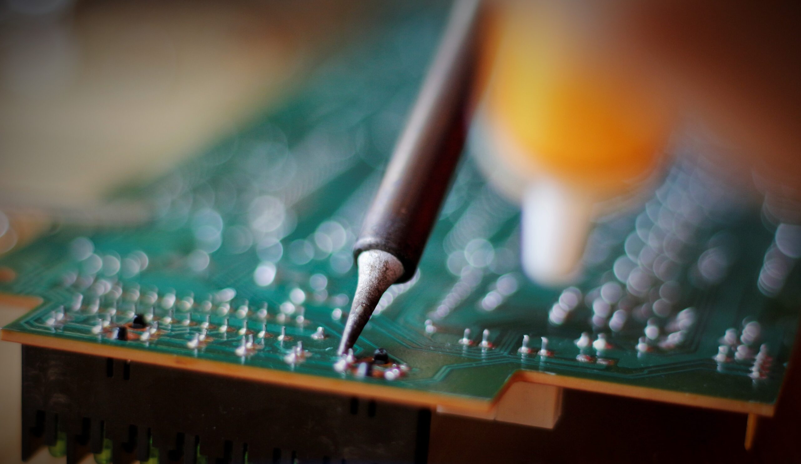

Mantenimiento
Cuidado periódico de céspedes, setos y plantas para mantener tu jardín siempre en óptimas condiciones durante todo el año.

Cuidado periódico de céspedes, setos y plantas para mantener tu jardín siempre en óptimas condiciones durante todo el año.

Limpieza, control de químicos y revisión de equipos para garantizar que tu piscina esté siempre lista para el baño.

Revisión y reparación de cableados, cuadros eléctricos y dispositivos para asegurar un funcionamiento seguro y eficiente.